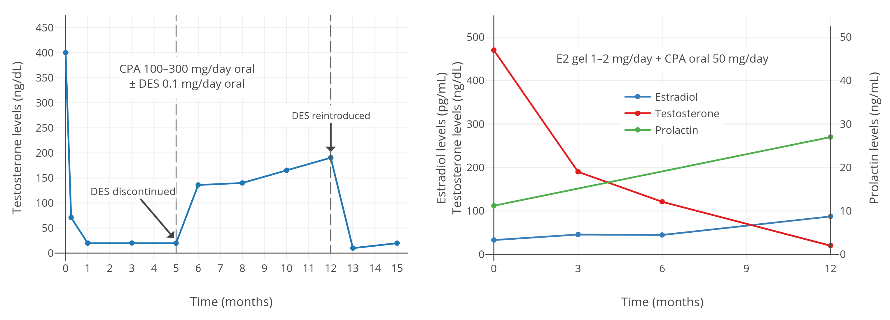

Low Doses of Cyproterone Acetate Are Maximally Effective for Testosterone Suppression in Transfeminine People
By Aly | First published July 1, 2019 | Last modified August 14, 2025
Abstract / TL;DR
Cyproterone acetate (CPA) is a progestogen and antiandrogen which is widely used in transfeminine hormone therapy. It is far more potent as a progestogen than as an androgen receptor antagonist. CPA has typically been used at doses of 1 to 2 mg/day as a progestogen in cisgender women and at doses of 50 to 300 mg/day as an antiandrogen. At typical antiandrogen doses of CPA, there is profound progestogenic overdosage as well as associated side effects and risks. CPA has antigonadotropic effects due to its progestogenic activity and thereby suppresses testosterone levels. By itself, CPA can maximally suppress testosterone levels by 50 to 70%, and in combination with even small amounts of estrogen, it can fully suppress gonadal testosterone production and thereby reduce testosterone levels by about 95%—or well into the female range. Although doses of CPA of 50 to 100 mg/day have been used in transfeminine people historically, it is now clear that 5 to 10 mg/day CPA has maximal or near-maximal effectiveness in terms of suppression of testosterone levels. CPA alone is most commonly available as 50-mg tablets. These tablets can be split with a pill cutter and taken once every day to once every other day to achieve an overall CPA dosage of 6.25 to 12.5 mg/day. These lower doses of CPA are not only much more cost-effective than traditional doses but are also likely to have better tolerability and safety. Due to the retained effectiveness of lower CPA doses and the known dose-dependent risks of CPA, doses of CPA used clinically in transfeminine people have been in a rapid decline.
Introduction
This article is about the dosage of cyproterone acetate (CPA), a progestin and antiandrogen, for use in hormone therapy for transfeminine people. It argues for the use of lower doses of CPA and goes fairly in-depth to justify these doses. If you are only interested in recommended doses of CPA for transfeminine people, they can be found in the Recommended Dosages section below.
Potency, Conventional Dosages, and Health Risks
CPA is a potent progestogen, with an ovulation-inhibiting dosage of about 1 mg/day and endometrial transformation dosage of about 1 to 3 mg/day in cisgender women (Wiki; Table; Endrikat et al., 2011). These dosages of CPA are similar in strength of progestogenic effect to those of normal progesterone production and levels during the luteal phase of the menstrual cycle in premenopausal women (which are about 25 mg/day and 15 ng/mL, respectively). In relation to the preceding, when CPA is used as a progestogen in cisgender women, for instance in birth control pills and menopausal hormone therapy preparations, it is formulated at a dose of 1 or 2 mg per tablet (Wiki).
In contrast to its progestogenic activity, CPA is far less potent as an androgen receptor antagonist (Wiki). When used as an antiandrogen, it is generally given at a dosage of 50 to 300 mg/day, both in cisgender women and men. A dosage of 50 to 100 mg/day is typical for androgen-dependent skin and hair conditions like acne and hirsutism in women and a dosage of 100 to 300 mg/day is typically used for prostate cancer in men (specifically 100–200 mg/day for CPA combined with castration and 200–300 mg/day for CPA monotherapy) (Wiki). As such, CPA is generally formulated at a dose of 50 or 100 mg per tablet for use in androgen-dependent conditions (Wiki). As an antiandrogen, CPA has a dual mechanism of action of both suppressing testosterone levels via its progestogenic activity at low doses and additionally blocking the actions of testosterone directly at the androgen receptor at higher doses.
Because CPA is so much more potent as a progestogen than as an androgen receptor antagonist, there is profound overdosage of progestogenic effect when CPA is used as an antiandrogen at typical clinical dosages. This is described in the following three literature excerpts by Jürgen Hammerstein, one of the scientists who developed CPA (Hammerstein et al., 1975; Hammerstein, 1990; Hammerstein, 1979):
Like chlormadinone acetate, its parent compound, CPA is also a strong progestogen with the endometrial transformation dose of both drugs being between 20 and 30 mg. […] To take full therapeutic advantage of its antiandrogenicity, CPA must be administered in doses per month that are 30 times the physiological equivalent of progesterone production in the cycle. CPA, although the most useful compound available in this field at the moment, cannot be considered therefore an ideal antiandrogen, all the more as some of the side effects may be related to the progestational overdosage rather than to the administered antiandrogenic activity. […] Adverse reactions like tiredness, lassitude, and increase in body weight are possibly due to the enormous overdose of progestational activity in the formula which is necessary to take full advantage of the antiandrogenicity of CPA.
Fixson (1963) tested CPA in ovariectomized women after pre-treatment with oestrogens; with a transformation dose of 20–30 mg this proved a powerful progestogen. The potency of CPA in the menses delay test is not exactly known, but has been estimated to be below 1 mg/day (Miller and Jacobs 1986). In relation to this progestational potency, its antiandrogenicity must be considered rather weak. Thus, in order to take full advantage of the latter, 100 mg CPA must be given daily, i.e. three times the cyclic transformation dose per day (Hammerstein and Cupceancu 1969); notably, this parameter is equivalent to the total progesterone production of a corpus luteum throughout its entire cyclic life span.
CPA may be characterized endocrinologically as possessing strong progestational [and] moderate anti-androgenic […] potencies. […] Its progestational activity, in terms of the transformation dose in the oestrogen-primed human endometrium, is 20–30 mg [per month/cycle] which is comparable to that of chlormadinone acetate and other strong progestogens. To take full clinical advantage of its anti-androgenicity not less than 50–100 mg CPA must be taken orally per day, which totals 2 to 3 times the progestational activity the female organism is exposed to throughout a complete ovulatory menstrual cycle. Thus unless much lower and less efficacious doses of CPA are used, a tremendous progestational overdosage must be accepted. […] As already pointed out CPA is endocrinologically not a well-balanced compound because of the strong preponderance of the progestational over the anti-androgenic potency. A way to avoid the heavy progestogen overdosage inherent with the high-dose reverse sequential therapy would be to combine the low-dose contraceptive formulation just mentioned with a pure anti-androgen such as free cyproterone. […] It must be emphasized that CPA is far from being an ideal drug for the anti-androgenic treatment of hirsutism because its progestational potency is much too strong and it is not effective when administered topically. Therefore it is worthwhile looking for better-balanced anti-androgenic compounds for the future.
The massive overdosage of progestogenic effect that occurs at such doses of CPA is likely responsible for the known adverse effects and risks of higher doses of CPA (Wiki). Examples of these side effects include fatigue, depression, weight gain, high prolactin levels (Wiki), benign brain tumors (Aly, 2020; Wiki; Table; Table), blood clots (Wiki), and cardiovascular problems (Wiki). Such risks are dose-dependent and have not been associated with 1 or 2 mg/day CPA (with the exception of an expected increase in the risk of blood clots in combination with oral estrogens for birth control or menopausal hormone therapy). The risk of liver toxicity with CPA is also dose-dependent, with elevated liver enzymes occurring mostly only at a dosage of 20 mg/day and above and rare cases of liver failure occurring almost exclusively at dosages of 100 mg/day and above (Wiki; Table). As such, there is good rationale for using the lowest possible effective dosage of CPA, an approach that is likely to minimize risks.
In transfeminine people, CPA has historically been used at a dosage of 50 to 100 mg/day (e.g., Moore, Wisniewski, & Dobs, 2003). Some earlier papers have recommended even higher doses of CPA, for instance 100 to 150 mg/day (Asscheman & Gooren, 1993). In 2017, the Endocrine Society published the latest edition of their clinical practice guidelines on hormone therapy for transgender people and reduced their recommended dosage of CPA from 50–100 mg/day to 25–50 mg/day (Hembree et al., 2017; Hembree et al., 2009). This was motivated in part by increasing knowledge and awareness of the risks of higher doses of CPA and by findings that these lower doses of CPA were still effective. However, it is likely that even these new lower dosages are still far in excess of what is really needed.
Testosterone Suppression with Low and High Doses
Progestogens by themselves, including CPA, are able to considerably suppress testosterone levels in gonadally intact people assigned male at birth. Around a dozen small and low-quality but nonetheless notable studies of low-dose CPA from the 1970s and early 1980s found that 5 to 10 mg/day CPA suppressed testosterone levels by about 40 to 70% in healthy young men (Table 1). A couple of individual studies notably reported virtually identical suppression of testosterone levels with 5 mg/day versus 10 mg/day CPA (both ~50% suppression) (Wang & Yeung, 1980; Graph) and with 10 mg/day versus 20 mg/day CPA (both ~60–70% suppression) (Koch et al., 1976; Koch et al., 1975; Graph). This lack of additional testosterone suppression with a doubling of dosage within studies suggests that testosterone suppression with CPA might have actually been maximal at a dosage of only 5 or 10 mg/day. A more modern study, which used a newer and more reliable analytic method for quantification of blood testosterone, found that 10 mg/day CPA suppressed testosterone levels by 66%, from about 600 ± 150 ng/dL to about 185 ng/dL (Meriggiola et al., 2002a; Graph). Similarly, another more modern study found that 10 to 20 mg/day CPA suppressed testosterone levels by 65%, from about 431 ng/dL to about 149 ng/dL, with no reported differences between doses (Zitzmann et al., 2017; Graph).
{kind=link}
{kind=link}
{kind=link}
{kind=link}
Table 1: Levels of testosterone and other sex hormones with CPA at low doses (5–30 mg/day):
| Treatment and subjects | Findings | Source(s) |
|---|---|---|
| 30 mg/day CPA in 5 normal males | T decreased “remarkably”. Exact values not given, but has graphs of T levels in a few individuals. After 30 mg/day, 5 mg/day was tried in one case and was not as effective in suppressing sperm production or T. Also reported decreases in gonadotropin excretion. | Petry et al. (1972); Petry et al. (1970a); Petry et al. (1970b); Petry et al. (1970c) |
| 10 or 20 mg/day CPA in 15 normal healthy fertile males (age 25–35 years) (7 in 10 mg/day group and 8 in 20 mg/day group) | “Androgens (mainly T)” decreased by 60% for both 10 and 20 mg/day. Inconsistent changes in LH and slight decrease in FSH. Exact values not given, except in graphs. | Koch et al. (1976); Koch et al. (1975) |
| 0, 5, or 10 mg/day CPA in 18 healthy males (age 20–40 years) (6 in each group) | T decreased, while LH and FSH were unchanged. No other details given, nor were exact hormone levels given. | Roy et al. (1976) |
| 10 mg/day CPA in 10 young healthy fertile men (age mean 27.2 ± 3.2 (range 21–35) years) | T decreased by 70%, DHT by 50%, LH by 30%, and FSH by 40%, while PRL increased by 75%. T was 495 ± 66 ng/dL before, 154 ± 23 ng/dL after 4 weeks, and 187 ± 38 ng/dL after 12 weeks. Also has values and graphs for other hormones. | Moltz et al. (1980); Moltz et al. (1978a); Moltz et al. (1978b) |
| 5 or 10 mg/day CPA in 14 healthy males (age 20–40 years) (7 in each group) | T decreased in both groups. No other details given, nor were exact hormone levels given. | Roy & Chatterjee (1979a) |
| 10 mg/day CPA alone for 12–18 weeks then 75 mg/day mesterolone added in 3 normal fertile men (age 32–35 years) | No information on T provided in this paper. | Roy & Chatterjee (1979b) |
| 20 mg/day CPA in 10 healthy males (age 26–55 years) | T decreased by 73% (range 71–75%), from 482 ng/dL (range 410–560 ng/dL) to 130 ng/dL (110–162 ng/dL). DHT decreased by 51% (range 47–55%), LH by 39% (range 34–45%), FSH by 66% (range 47–78%), 17-OH-P4 by 59%, A4 by 30%, TS by 34%, and DHTS by 35%. Also has exact values and graphs for other hormones. | de la Torre (1979) |
| 5 or 10 mg/day CPA in 7 males (4 in each group; 1 received both 5 and 10 mg/day CPA at different times) | T change was “−40%” or “–50%”. At 5 mg/day, T was 745 ng/dL before, 460 ng/dL with treatment (–38%), and 668 ng/dL after discontinuation. At 10 mg/day, T was 708 ng/dL before, 398 ng/dL with t (reatment–44%), and 670 ng/dL after discontinuation. Also reported LH and FSH levels. | Føgh et al. (1979); Damgaard-Pederson et al. (1980); Føgh et al. (1980); Foegh (1983) |
| 0, 5, or 10 mg/day CPA in 25 normal healthy males (age 20–51 years); 7 in 5 mg group (mean 37 ± 10 years), 8 in 10 mg group (mean 32 ± 8 years), 10 in 0 mg group (mean 32 ± 10 years) | At 5 mg/day, T decreased from 663 ± 120 ng/dL to 320 ± 160 ng/dL (−52%), and at 10 mg/day, T decreased from 692 ± 180 ng/dL to 340 ± 160 ng/dL (−51%). E2 decreased in parallel to T. At 5 mg/day, LH decreased from 2.1 ± 0.7 IU/L to 1.4 ± 0.5 IU/L (−33%), and at 10 mg/day, LH decreased from 2.3 ± 1.0 IU/L to 1.2 ± 0.5 IU/L (−48%). At 5 mg/day, FSH decreased from 3.1 ± 1.9 IU/L to 1.8 ± 0.9 IU/L (−42%), and at 10 mg/day, FSH decreased from 2.7 ± 1.0 IU/L to 1.5 ± 0.7 IU/L (−44%). | Wang & Yeung (1980) |
| 10 or 25 mg/day CPA in 4 healthy men (age 29–37 years); 3 in 10 mg group, 1 in 25 mg group | T “slightly reduced”. E “more significantly lowered”. LH not significantly changed. FSH “reduced” in “more or less all cases”. Exact hormone levels not given, but graphs provided with the values. | Fredricsson & Carlström (1981) |
| 10 or 20 mg/day CPA in 30 healthy males (age 21–38 years) | T decreased by 70%, LH decreased by 35%, and “similar observations for FSH”. Exact values not provided. | Moltz et al. (1982) |
| 10 mg/day CPA (also placebo and 2, 5, and 10 mg/day dienogest) in 5 healthy men in each group | With CPA, T decreased from ~600 ± 150 ng/dL to ~185 ng/dL (–66 ± 4%). Also reported LH, FSH, and SHBG, as well as hormonal changes with placebo and dienogest (2, 5, and 10 mg/day). | Meriggiola et al. (2002a) |
| 10 or 20 mg/day CPA in 14 healthy young men (7 in each group) | T decreased from ~431 ng/dL at baseline to ~149 ng/dL with CPA (–65%) for the 10 and 20 mg/day doses combined. Values for dose subgroups not given. No significant differences between LH/FSH suppression between groups (which is indirectly suggestive of no differences in T suppression as well). Also reported hormone levels with other progestins. | Zitzmann et al. (2017) |
These graphs adapted from some of the studies provide visualizations of some of the findings:
| Figures 1–4: Testosterone levels during treatment with low doses of CPA alone in men. Sources: Top: Moltz et al. (1980); Moltz et al. (1978a); Moltz et al. (1978b). Mid-left: Wang & Yeung (1980). Mid-right: Koch et al. (1976); Koch et al. (1975). Bottom: Meriggiola et al. (2002a). See also on Wikipedia: Gallery. The bottom graph is the 2002 study using DELFIA to quantify testosterone levels. This study also assessed different doses of dienogest (DNG), which has an ovulation-inhibiting dose of 1 mg/day similarly to CPA. |
Studies with other progestogens, such as desogestrel, dienogest, and medroxyprogesterone acetate, have consistently found that maximal suppression of testosterone levels in men occurs at a dosage that is between 5 and 10 times that of the ovulation-inhibiting dosage in cisgender women (Wiki; Wiki; Wiki). Another study is likewise suggestive of this for norethisterone acetate and levonorgestrel (Zitzmann et al., 2017; Graph). Along similar lines, doses of progestogens investigated for use in male hormonal contraception, in which the goal is antigonadotropic effects and the lowest fully effective dose is targeted, have been noted as being between 5 and 12 times the doses used in cisgender women (Foegh, 1983). Based on an ovulation-inhibiting dosage of CPA of 1 mg/day, these findings would imply that suppression of testosterone levels with CPA would likely be maximal at a dose of between 5 and 10 mg/day. In accordance, this dose range matches up with the findings of the studies above.
Studies of much higher doses of CPA have shown little better suppression of testosterone levels than lower doses. Modern studies in healthy young adult and adolescent transfeminine people have found that 50 to 100 mg/day CPA alone suppresses testosterone levels by 46 to 61% (from 456–602 ng/dL to 226–294 ng/dL at 4–12 months) (Toorians et al., 2003; Giltay et al., 2004; T’Sjoen et al., 2005; Tack et al., 2017). Older studies in elderly men with prostate cancer have found greater suppression of testosterone levels with high-dose CPA monotherapy (by up to 70–80%, typically to between 50–200 ng/dL) (Gräf, Brotherton, & Neumann, 1974; Jacobi et al., 1980; Graph; Knuth, Hano, & Nieschlag, 1984; Graph; Schröder & Radlmaier, 2002; Nelson, 2012). The greater testosterone suppression in men with prostate cancer may be related to different blood-testing methodology between studies and/or to the fact that older men have weaker hypothalamic–pituitary–gonadal (HPG) axes and lower testosterone levels (Liu, Takahashi, & Veldhuis, 2017; Winters, Wang, & Fortigel Study Group, 2010).
{kind=link}
{kind=link}
Although progestogens can considerably suppress testosterone levels at maximally effective dosages, it has been found that a “recovery” or “escape phenomenon”, in which testosterone levels eventually increase back to higher levels, occurs when progestogen monotherapy is used on a long-term basis. This has most notably been observed with the related progestogen megestrol acetate (Wiki), but has also been seen with CPA (Goldenberg & Bruchovsky, 1991; Saborowski, 1987; Jacobi, Tunn, & Senge, 1982). In one of these studies, testosterone levels were initially suppressed by CPA by about 70%, but increased back to about 50% of baseline between 6 and 12 months of therapy, remaining stable thereafter up to 24 months. The testosterone escape phenomenon should be kept in mind in the context of progestogen monotherapy for testosterone suppression. In contrast to progestogen monotherapy, this phenomenon has not been associated with combined estrogen and progestogen therapy.
Testosterone Suppression in Combination with Estrogen
CPA is generally used in combination with an estrogen in transfeminine people. Estrogens suppress testosterone levels similarly to progestogens. The combination of an estrogen and a progestogen is synergistic in terms of testosterone suppression and results in suppression of testosterone levels with lower doses than with either an estrogen or progestogen alone (Fink, 1979; Geller & Albert, 1983; Bastianelli et al., 2018). Although estrogens can suppress testosterone levels to an equivalent extent as surgical or medical castration (i.e., orchiectomy or GnRH agonists/antagonists), this usually requires relatively high estrogen levels, for instance in the range of 200 to 500 pg/mL (Wiki; Graphs). Because of the high and supraphysiological estradiol levels required for maximal or near-maximal suppression of testosterone levels, lower doses of estradiol are frequently combined with antiandrogens and/or progestogens to block or suppress remaining testosterone levels instead.
The combination of estradiol and high doses of CPA (e.g., 50–100 mg/day) in transfeminine people has been shown to suppress testosterone levels into the normal female range (≤50 ng/dL or ≤1.7 nmol/L) in numerous studies (Giltay & Gooren, 2000; Giltay et al., 2000; Giltay et al., 2003; Giltay et al., 2004; Toorians et al., 2003; T’Sjoen et al., 2005; Slagter et al., 2006; T’Sjoen et al., 2009; Ott et al., 2011; Wierckx et al., 2012; Wierckx et al., 2014; Zubiaurre-Elorza et al., 2014; Fuss et al., 2015; Van Caenegem et al., 2015; Gava et al., 2016; Bultynck et al., 2017; Fung, Hellstern-Layefsky, & Lega, 2017; Kranz et al., 2017; Tack et al., 2017; Wiepjes et al., 2017; de Blok et al., 2018; Defreyne et al., 2018; Vita et al., 2018; Angus et al., 2019; Chen et al., 2019; Scharff et al., 2019; van Dijk et al., 2019; van Velzen et al., 2019; Vereecke, 2019; Vlot et al., 2019; Wiepjes et al., 2019; Kranz, Kaufmann, & Lanzenberger, 2020; Meyer et al., 2020; Gava et al., 2020; Sofer et al., 2020; Vereecke et al., 2021).
In the 1980s and 1990s, clinical studies in men with prostate cancer showed that the combination of a high dosage of a progestogen, such as 100 to 300 mg/day CPA or 40 to 160 mg/day megestrol acetate, with a low dosage of an estrogen, such as 0.1 to 0.2 mg/day diethylstilbestrol or 0.5 to 1.5 mg/day oral estradiol, was able to completely suppress gonadal testosterone production and reduce testosterone levels well into the male castrate range (<50 ng/dL) (Geller et al., 1981a; Geller et al., 1981b; Geller & Albert, 1983; Goldenberg et al., 1988; Johnson et al., 1988; Geller, 1988; Venner et al., 1988; Geller, 1991; Goldenberg & Bruchovsky, 1991; Bruchovsky et al., 1993; Goldenberg et al., 1996). Similarly, a 1989 case series reported the same in three transfeminine people treated with CPA 100 mg/day and relatively low doses of estrogens (Jequier, Bullimore, & Bishop, 1989). Here is a noteworthy and informative literature excerpt on this topic in the context of prostate cancer (Schröder & Radlmaier, 2002):
CPA, as mentioned earlier, leads to an incomplete suppression of plasma testosterone levels, which decrease by about 70% and remain at about three times castration values. In a very systematic approach to the problem, Rennie et al. (59) investigated and compared 12 different procedures of androgen deprivation. These authors found that the combination of CPA with an extremely low dose (0.1 mg/d) of [diethylstilbestrol (DES)] led to a very effective withdrawal of androgens in terms of plasma testosterone and tissue dihydrotestosterone. The same group later showed that 200 mg of CPA, and even 100 mg/day, was sufficient to achieve a similar endocrine response, which was correlated to very favorable clinical responses in a Phase II situation (60,61). The approach has many potential advantages, and, from an endocrinological point of view, is very logical: this regimen combines the testosterone-reducing effects of two compounds, therefore, only small amounts of estrogen are required to bring down plasma testosterone to approximately castrate levels. Once castrate levels have been achieved, only low doses of CPA are necessary to counteract remaining androgens, mainly of adrenal origin. The regimen was shown to be associated with few side effects and a very low cost. The combination of low-dose CPA with low-dose DES was never studied in a Phase III situation in comparison to standard management. Considering the endocrine results and the observations in patients treated with this regimen (60), this combination treatment is very likely to be competitive with other standard forms of therapy.
A 2016 study of 50 mg/day CPA and 1 to 2 mg/day transdermal estradiol gel in transfeminine people showed that estradiol levels of about 45 pg/mL with CPA were insufficient to achieve female/castrate levels of testosterone, instead resulting in testosterone levels of about 120 to 190 ng/dL (Gava et al., 2016; Graph). Conversely, estradiol levels of about 85 pg/mL with CPA achieved complete suppression of gonadal testosterone production, with resulting testosterone levels of about 20 ng/dL. As such, a certain minimum level of estradiol with CPA appears to be required for complete testosterone suppression. A 2019 study of CPA and oral estradiol valerate in transfeminine people indicated that testosterone levels were still fully suppressed with median estradiol levels of 76 pg/mL and 25th percentile estradiol levels of 63 pg/mL (Angus et al., 2019; Graph).
{kind=link}
{kind=link}
|  |
|---|
| Figures 5–7: Testosterone levels with CPA plus low doses/levels of estrogens in men and transfeminine people. Sources: Top-left: Goldenberg et al. (1988). Top-right: Gava et al. (2016). Bottom: Angus et al. (2019). See also on Wikipedia: Gallery. Note for the graph on the top right that the mean transdermal estradiol dosage increased between 6 and 12 months and this was likely responsible for the improvement in testosterone suppression. |
Fung and colleagues showed that the combination of either 25 or 50 mg/day CPA with a moderate dosage of oral estradiol (~3.5 mg/day) or transdermal estradiol (~3.5 mg/day gel or ~100 μg/day patch) resulted in equivalent and complete suppression of gonadal testosterone production (~95% suppression of testosterone levels) in transfeminine people (Fung, Hellstern-Layefsky, & Lega, 2017). These dosages of estradiol would be expected to achieve estradiol levels of around 100 pg/mL on average (Aly, 2020; Wiki). This study was notably published 6 months before the 2017 second edition of the Endocrine Society guidelines were released (Hembree et al., 2017), and was probably responsible for the decrease in their recommended dosage of CPA from 50–100 mg/day to 25–50 mg/day.
Few studies to date have assessed testosterone suppression with low-dose CPA in combination with a low or moderate dosage of an estrogen. However, based on the fact that 5 to 10 mg/day CPA alone is probably maximal in terms of suppression of testosterone levels, it is likely that such dosages of CPA will be similarly effective as higher dosages. In accordance, studies of 5 to 12.5 mg/day CPA plus upper physiological replacement dosages of testosterone have demonstrated undetectable gonadotropin levels (<0.5 IU/L) and hence complete suppression of testicular function in healthy young men (Meriggiola et al., 1998; Meriggiola et al., 2002b). Estradiol is a more powerful antigonadotropin than testosterone (Wiki), so these findings probably apply to CPA in combination with physiological replacement levels of estradiol as well (e.g., mean estradiol levels of 100–200 pg/mL).
Accordingly, Meyer et al. (2020) assessed a dosage of CPA in combination with estradiol in 155 transfeminine people and found no difference in testosterone levels with 10, 25, or 50 mg/day CPA; testosterone levels were strongly suppressed with all three doses (to about 15–20 ng/dL on average, or into the lower end of the normal female range). The estradiol forms and doses used in this study were oral estradiol valerate (median 6 mg/day, range 3–10 mg/day), transdermal estradiol gel (median 2.25 mg/day, range 1.5–6 mg/day), and transdermal estradiol patches (100 μg/day in all cases). Estradiol levels were about 100 pg/mL on average, with an interquartile range (i.e., difference between 75th and 25th percentiles) of about 100 pg/mL. This study demonstrates that, provided estradiol levels are adequate, no more than 10 mg/day CPA is needed to fully suppress testosterone levels in transfeminine people. Another study likewise found no difference between <20 mg/day and >50 mg/day CPA in terms of testosterone suppression in transfeminine people (Even-Zohar et al., 2020).
Even doses of CPA lower than 5 mg/day (e.g., 2 mg/day) may be usefully effective for testosterone suppression if combined with sufficient levels of estradiol, although this has not been studied and remains to be validated. But there is certainly precedent for the notion when looking at studies with other progestogens. As an example, one study using 10 mg/day oral medroxyprogesterone acetate (which is roughly equivalent to 1 mg/day CPA in terms of ovulation inhibition in premenopausal women; Table) observed 63% lower testosterone levels (215 ng/dL vs. 79 ng/dL) when added to estradiol and spironolactone therapy in transfeminine people (Jain, Kwan, & Forcier, 2019). Analogous effects on testosterone levels would be anticipated for very-low-dose CPA. Moreover, such dosages of CPA would have the advantage of actually being physiological in terms of progestogenic exposure.
Clinical Adoption of Lower Doses
In light of the risks of higher doses of CPA and the strong capacity for testosterone suppression of lower doses of CPA, lower doses of the medication are being increasingly adopted clinically in transfeminine hormone therapy. A number of literature sources evidence this by recommending and describing use of lower doses in transfeminine people (e.g., Lederbogen, 2009; Fung, Hellstern-Layefsky, & Lega, 2017; Heath & Wynne, 2019; Winkler-Crepaz et al., 2017; Mahfouda et al., 2018; Oliphant et al., 2018; Athanasoulia-Kaspar & Stalla, 2019; Bourns, 2019; Fuss et al., 2019; Jacobeit, 2019; Nota, den Heijer, & Gooren, 2019; ANZCTR, 2020; Meyer et al., 2020; T’Sjoen et al., 2020). In the case of Nota, den Heijer, & Gooren (2019), their newer recommendations for CPA of 10 to 50 mg/day and use for no longer than absolutely necessary are a major departure from their past extensive use and recommendation of 100 mg/day CPA (Asscheman & Gooren, 1993; Gooren, Giltay, & Bunck, 2008).
Androgen Receptor Antagonism with Higher Doses
The androgen receptor antagonism of CPA is relatively weak in terms of potency; dosages of CPA of 50 to 300 mg/day seem to be necessary for meaningful or considerable androgen receptor antagonism. Unfortunately, such doses also result in extreme progestogenic overdosage and are associated with considerably greater risks and adverse effects. As a result, the use of such doses of CPA should no longer be considered advisable. Instead, CPA should be used at lower doses simply as a progestogen to suppress testosterone levels. As such, the highest effective dosage of CPA for testosterone suppression, which is probably about 10 mg/day or less (12.5 mg/day also being acceptable), should be around the maximal dosage of CPA that is used in transfeminine people.
It should be emphasized that since the combination of an estrogen and CPA can easily suppress testosterone levels well into the female/castrate range (typically to below average female levels), there isn’t necessarily a requirement for concomitant androgen receptor blockade. In any case, if androgen receptor antagonism to neutralize the remaining female/castrate levels of testosterone is still necessary or desired (e.g., to treat persisting acne or for some other purpose), a low dosage of a non-progestogenic androgen-receptor antagonist like spironolactone (e.g., 100–200 mg/day) or bicalutamide (e.g., 12.5–25 mg/day) can be added to CPA to more safely achieve this than use of higher CPA doses.
Recommended Dosages
Dosage for Testosterone Suppression
Estrogen Plus Cyproterone Acetate
The following recommended dosages of CPA in transfeminine people are for the combination of CPA with an estrogen and are specifically for achieving maximal suppression of testosterone levels:
Table 2: Recommended doses of CPA in combination with estrogen for maximal testosterone suppression in transfeminine people:
| Form | Min. dosage | Max. dosage | Amount |
|---|---|---|---|
| 10 mg tablets | 5 mg/day | 10 mg/day | 1/2 of a tablet to 1 whole tablet per day |
| 50 mg tablets | 6.25 mg/day | 12.5 mg/day | 1/8th of a tablet to 1/4th of a tablet per day |
Start with the minimum dosage of CPA for one month. After one month, have testosterone levels tested and confirm that they are in the normal female/castrate range (<50 ng/dL). Regardless of dosage, a concomitant minimum estradiol level of around 65 pg/mL needs to be attained in order to allow for complete suppression of testosterone levels with CPA. If testosterone levels aren’t sufficiently suppressed after a month and estradiol levels are adequate, increase to the maximum CPA dosage and re-check testosterone levels after another month. Alternatively, the dosage of estradiol can be increased instead; higher estradiol levels result in greater testosterone suppression as well.
Cyproterone Acetate Alone
The use of CPA alone (i.e., as a monotherapy for testosterone suppression) is not recommended due to the risk of decreased bone mineral density and other symptoms of sex-hormone deficiency (Wiki; Aly, 2019). In any case, the recommended dosages for CPA without an estrogen are essentially the same as those listed above of the combination of an estrogen with CPA for testosterone suppression. However, the higher CPA dose (10–12.5 mg/day) may be preferable for good measure in this scenario.
Dosage for Progestogenic Effects
The following recommended dosages of CPA in transfeminine people are for progestogenic effects similar to normal physiological exposure (equivalent of luteal-phase progesterone levels):
Table 3: Recommended doses of CPA for physiological progestogenic effects in transfeminine people:
| Form | Dosage | Amount |
|---|---|---|
| 10 mg tablets | 2.5 mg/day | 1/4th of a tablet per day |
| 50 mg tablets | 3.125 mg/day | 1/16th of a tablet per day |
Achieving Desired Dosages
CPA is available pharmaceutically most widely as 50-mg tablets. This can make achieving desired low doses of CPA more difficult. For splitting CPA tablets into small fractions, a pill cutter can be used. Additionally, CPA can be taken once every 2 or 3 days instead of once every day to help further divide doses. It is notable that CPA has a relatively long half-life in the body of about 1.5 to 2 days (but possibly up to 4 days) (Wiki; Graph). Hence, taking it once every other day instead of once per day, or even less frequently like once every 3 days, has sound basis and is likely to be entirely viable.
{kind=link}
Updates
Update 1: GoLoCypro Study (In-Progress)
The GoLoCypro study (2019–2022) (more info) is being conducted by Dr. Judith Dean at the University of Queensland in Australia. It’s assessing the influence of estradiol plus CPA on testosterone levels at five different CPA dose levels (12.5 mg 2x/week, 12.5 mg/2 days, 12.5 mg/day, 25 mg/day, and 50 mg/day) in a total of 120 to 350 transfeminine people. CPA doses are being titrated to the minimum that maintain testosterone levels within the therapeutic goal range of 0.5 to 1.5 nmol/L (14–43 ng/dL). The study is among the first dose-ranging studies of CPA in transfeminine people to be conducted and is eagerly anticipated due to the valuable information that it should provide in terms of the minimum effective dosage of CPA for adequate testosterone suppression in transfeminine hormone therapy.
Update 2: Kuijpers et al. (2021) and Even Zohar et al. (2021)
In June 2021, the following study on low doses of CPA in transfeminine people by the European Network for the Investigation of Gender Incongruence (ENIGI) initiative was published online:
- Kuijpers, S. M., Wiepjes, C. M., Conemans, E. B., Fisher, A. D., T’Sjoen, G., & den Heijer, M. (2021). Toward a lowest effective dose of cyproterone acetate in trans women: Results from the ENIGI study. The Journal of Clinical Endocrinology & Metabolism, 106(10), e3936–e3945. [DOI:10.1210/clinem/dgab427]
The study employed estradiol (2–6 mg/day oral (as estradiol valerate), 50–150 μg/day patch, or gel) plus five different dose levels of CPA—0 mg/day (no CPA), 10 mg/day, 25 mg/day, 50 mg/day, and 100 mg/day. It found incompletely suppressed testosterone in the no CPA group but full and equivalent testosterone suppression with all doses of CPA. The results were as follows:
| CPA dosage | |||||
|---|---|---|---|---|---|
| 0 mg/day | 10 mg/day | 25 mg/day | 50 mg/day | 100 mg/day | |
| Initial subjects (n) | 34 | 4 | 234 | 599 | 11 |
| Dose increased (n) | 16 | 1 | 11 | 2 | 0 |
| Dose decreased (n) | 0 | 0 | 4 | 40 | 7 |
| T levels (nmol/L) | 5.5 | 0.9 | 0.9 | 1.1 | 0.9 |
| T levels (ng/dL) | ~160 | ~26 | ~26 | ~32 | ~26 |
| T <2 nmol/L [<~58 ng/dL] (%) | 46.3 | 92.3 | 96.2 | 93.4 | 100.0 |
Abbreviations: T = testosterone.
The total numbers of subjects and blood tests after CPA dose increases/decreases were not provided. Hence, the exact total number of people and tests for the 10 mg/day group can’t be stated with certainty. The total number of tests for this group was at least 13 based on the testosterone suppression percentage provided however (92.3% or 12/13 but could potentially be 24/26, etc.). Regarding the small number of subjects/tests for the 10 mg/day group, the authors stated the following:
This study is part of the ENIGI initiative, a multicenter prospective cohort study. The main treatment protocol for trans women in this study was 50 mg of CPA daily combined with estrogens. In the first year of study inclusion, a few participants received a dose of 100 mg of CPA. Shortly thereafter, inhospital protocol changed to 50 mg of CPA. As more health concerns related to CPA use were raised over the years, the dose was further lowered from 50 mg to 25 mg and, finally, to 10 mg. However, due to the coronavirus (COVID-19) pandemic, limited results of participants with 10 mg of CPA were available for analysis.
Besides testosterone suppression, the study found that 10 mg/day CPA had less influence on prolactin and high-density lipoprotein (HDL) cholesterol levels than the higher doses of CPA. The study also assessed liver enzyme levels but found no differences between CPA doses.
The authors concluded with the following:
In conclusion, in this cohort of trans women, 10 mg of CPA was found to be effective in lowering testosterone concentrations to the range observed in cis women. A dose of 10 mg was equally effective as higher doses, was found to have less influence on prolactin concentrations and allows higher HDL-C concentrations to be maintained. While GnRH agonists are preferred over CPA due to the fewer associated long-term side effects, this study shows that CPA at a low dose is a viable option when GnRH agonists are contra-indicated, not available, or not reimbursed. Future research should focus on assessing the effectiveness of an even lower dose of CPA (e.g., 5 mg) and the potential long-term side effects.
Around the same that this study was published, Guy T’Sjoen (one of the authors of the study) and other colleagues in a review of optimal hormone therapy for transfeminine people recommended a dosage of no more than 10 or 12.5 mg/day CPA for no longer than 2 years (Glintborg et al., 2021). T’Sjoen is notable in being regarded as one of the foremost experts in transgender medicine and is a coauthor of the Endocrine Society transgender care guidelines (Hembree et al., 2017).
Shortly after the study of Kuijpers and colleagues and also in June 2021, Even Zohar and colleagues in Israel published the following study on low doses of CPA in transfeminine people:
- Even Zohar, N., Sofer, Y., Yaish, I., Serebro, M., Tordjman, K., & Greenman, Y. (2021). Low-Dose Cyproterone Acetate Treatment for Transgender Women. The Journal of Sexual Medicine, 18(7), 1292–1298. [10.1016/j.jsxm.2021.04.008]
This study was initially reported as a conference abstract in May 2020 (Even-Zohar et al., 2020).
In the introduction section of the paper, the authors stated the following:
Treatment guidelines published by several organizations are available and assist clinicians in treating transgender women.4,7−9 A wide range of regimens for CPA administration have been proposed. By and large, the recommended doses have decreased over the years: doses of 50–100 mg/day were suggested in the 2009 Endocrine Society Guidelines,10 and amended to 25–50 mg/day in 2017.7 The proposed CPA doses were 12.5–25 mg/day in the 2019 guidelines of the Australian Professional Association for Transgender Health,4 and they were amended to 10–50 mg/day in the 2020 guidelines of the European Society for Sexual Medicine.8 There are no publications on data that compare different doses of CPA for efficacy or safety.
The researchers found that estradiol plus low-dose CPA (10–20 mg/day) suppressed testosterone levels to an equivalent extent as estradiol plus high-dose CPA (50–100 mg/day). Testosterone levels were suppressed into the female/castrate range or near so in both groups (generally ≤2 nmol/L or ≤58 pg/mL). Of the 38 transfeminine people on low-dose CPA, 32 (84%) were on 10 mg/day CPA and 6 (16%) were on 20 mg/day CPA (mean dose 11.6 ± 3.7 mg/day). Estradiol was given as transdermal estradiol patch (mean dose 83.7 ± 36.5 μg/day), transdermal estradiol gel (mean dose 3.8 ± 1.2 g/day), or oral estradiol (mean dose 4.1 ± 1.7 mg/day). Mean estradiol levels ranged from ~110 to 350 pmol/L (~30–95 pg/mL) in the low- and high-dose CPA groups over the follow-up period. Besides showing equivalent testosterone suppression, prolactin levels were significantly lower with low-dose CPA than with high-dose CPA (398 ± 69 mIU/mL vs. 804 ± 121 mIU/mL at 12 months of hormone therapy, respectively).
Based on their findings, the authors stated the following:
We suggest an adjustment of current clinical practice guidelines to recommend lower doses of CPA for the treatment of transgender women.
Both Kuijpers et al. (2021) and Even Zohar et al. (2021) claimed to be the first to demonstrate the efficacy of low-dose CPA in transfeminine people. However, that achievement actually appears to belong to Meyer et al. (2020), who in February 2020 found that estradiol plus 10, 25, or 50 mg/day CPA gave equivalent testosterone suppression across CPA doses in transfeminine people.
Although their study was not about CPA and testosterone suppression, Lim et al. (2020) reported in May/July 2020 that testosterone levels in transfeminine people were median (IQR) 0.6 (0.4–1.0) nmol/L for oral estradiol and 0.9 (0.7–1.6) nmol/L for transdermal estradiol in a mixed group of transfeminine people (n=26 total) on estradiol plus low-dose CPA (12.5 (12.5–18.8) mg/day) (n=14), estradiol alone post-gonadectomy (n=9), and estradiol plus spironolactone (n=3).
Update 3: Kumar et al. (2021) [Lower-Dose CPA Liver Failure Case]
In December 2021, the following case report of fatal liver failure with low-dose CPA was published:
- Kumar, P., Reddy, S., Kulkarni, A., Sharma, M., & Rao, P. N. (2021). Cyproterone acetate induced Acute liver failure: Case report and review of the literature. Journal of Clinical and Experimental Hepatology, 11(6), 739–741. [DOI:10.1016/j.jceh.2021.01.003]
The case report describes a 30-year-old cisgender woman who was on 25 mg/day CPA for treatment of hirsutism (excessive facial/body hair growth) for 6 months and developed acute liver failure. Four days following hospitalization, she died. This is the second published case report of liver toxicity with CPA at a dosage below 100 mg/day (the first and only other case was at 50 mg/day) (Wiki; Table). It is also the first report of liver failure in a cisgender woman taking CPA. The case indicates that CPA even at a relatively low dose of 25 mg/day is not fully safe in terms of liver toxicity. It further emphasizes the importance of using the lowest effective doses of CPA in transfeminine people (no more than 10–12.5 mg/day).
Update 4: Coleman et al. (2022) [WPATH SOC8 Guidelines]
In September 2022, the World Professional Association for Transgender Health (WPATH) Standards of Care for the Health of Transgender and Gender Diverse People Version 8 (SOC8) were published and made recommendations for transgender hormone therapy for the first time (Coleman et al., 2022). These guidelines recommended a dose of CPA of 10 mg/day in transfeminine people (Coleman et al., 2022). This dose is substantially lower than previous doses recommended by transgender care guidelines and is the first time that major guidelines have recommended a CPA dosage this low. The WPATH SOC8 cited Kuijpers et al. (2021) in support of this recommendation (though notably not Even Zohar et al. (2021) or Meyer et al. (2020)) and also discussed the dose-dependent risks of CPA such as meningiomas and high prolactin levels (Coleman et al., 2022). Considering the key position and importance of the WPATH SOC in transgender health, it is likely that lower CPA doses in transfeminine hormone therapy will now be widely adopted throughout the world. Continued use of higher CPA doses should be considered out of step with current accepted evidence-based practice.
Update 5: Collet et al. (2023)
In October 2022, a study more carefully assessing androgen suppression with estradiol plus CPA in transfeminine people was published:
- Collet, S., Gieles, N., Wiepjes, C. M., Heijboer, A. C., Reyns, T., Fiers, T., Lapauw, B., den Heijer, M., & T’Sjoen, G. (2023). Changes in serum testosterone and adrenal androgen levels in transgender women with and without gonadectomy. The Journal of Clinical Endocrinology & Metabolism, 108(2), 331–338. [DOI:10.1210/clinem/dgac576]
This study was part of the European Network for the Investigation of Gender Incongruence (ENIGI) initiative, mostly including patients from the Amsterdam, Netherlands and Ghent, Belgium clinics.
In the study, 275 transfeminine people were treated with estradiol plus CPA, and levels of total testosterone, free testosterone, and the adrenal androgens dehydroepiandrosterone (DHEA), dehydroepiandrosterone sulfate (DHEA-S), and androstenedione (A4) were measured using liquid chromatography–mass spectrometry (LC–MS) at baseline and during follow-ups at 3 months, 12 months, 2 to 4 years, and after surgical gonadal removal (at which time CPA was discontinued). Estradiol was measured both with LC–MS (Amsterdam clinic) and with immunoassays (Ghent clinic). The forms and doses of estradiol used were most commonly oral estradiol valerate 4 mg/day or a transdermal estradiol patch 100 μg/day, while the dosage of CPA was usually 25 or 50 mg/day. About half of the transfeminine people eventually underwent surgical gonadal removal, usually after 2 years of hormone therapy.
Median estradiol levels ranged from 49 to 75 pg/mL (180–275 pmol/L) with LC–MS and from 63 to 69 pg/mL (232–255 pmol/L) with immunoassays at different follow-ups. After 3 months of hormone therapy, total testosterone decreased by 97.1%, from 536 ng/dL (18.6 nmol/L) to 12 ng/dL (0.40 nmol/L), and free testosterone decreased by 98.3%, from 109 pg/mL (378 pmol/L) to 2.0 pg/mL (7.1 pmol/L). Thereafter, total and free testosterone levels remained stable. Levels of DHEA, DHEA-S, and A4 decreased by 24.9 to 28.0%, 20.1 to 23.5%, and 36.5%, respectively, and likewise did not further change after the first 3 to 12 months of hormone therapy. No changes in androgen levels occurred upon surgical gonadal removal with discontinuation of CPA. The authors noted that testosterone levels in the transfeminine people on hormone therapy in the study were similar to or lower than those in cisgender women.
Update 6: Warzywoda et al. (2024) [GoLoCypro Study]
The GoLoCypro study, by Judith Dean and colleagues, was published online in February 2024:
- Warzywoda, S., Fowler, J. A., Wood, P., Bisshop, F., Russell, D., Luu, H., Kelly, M., Featherstone, V., & Dean, J. A. (2024). How low can you go? Titrating the lowest effective dose of cyproterone acetate for transgender and gender diverse people who request feminizing hormones. International Journal of Transgender Health, advance online publication. [DOI:10.1080/26895269.2024.2317395]
The following are some noteworthy excerpts from the paper:
Of participants who completed the protocol, 74.0% (34/46) were able to achieve the target T-range (0.5–1.5 nmol/L) and 41.3% (19/46) were titrated to the lowest CPA level (12.5 mg cyproterone twice weekly).
Almost all participants who completed the protocol (91.3.0%, 42/46) recorded their CPA levels as level 3 (12.5 mg daily/25 [mg] alternate days) or lower, with 69.0% (29/42) of these being able to achieve the target T-range. Of those that completed, 41.3% (19/46) were able to achieve the lowest CPA level (12.5 mg cyproterone twice week) with 57.9% (11/19) being able to achieve the target T-range.
The study findings showed that for some patients, CPA doses as low as 12.5 mg on alternate days or less can successfully reduce testosterone to pre-menopausal ranges whilst ensuring testosterone was not over-suppressed.
Our study found that doses of CPA lower than the standard dose (12.5 mg CPA daily and/or 25 mg alternate days) were achievable for suppression of testosterone. Several studies have supported this finding that a lower dosage (10 mg CPA daily) is effective in testosterone reduction in individuals undergoing hormone feminization (Even Zohar et al., 2021; Kuijpers et al., 2021). While not all individuals within our study were able to titrate down CPA dosages, almost a quarter of participants who completed the protocol were achieving target T-ranges on 12.5 mg CPA twice weekly (equivalent to 3.5 mg/daily). To our knowledge ours is the first study to demonstrate that doses lower than 10 mg/daily as well as alternate days or twice weekly CPA are clinically effective in maintaining testosterone reduction within target ranges.
Update 7: More New Low-Dose CPA Studies (2023–2025)
Other new studies of low-dose CPA in transfeminine people have also been published in 2023 and 2024:
- Angus, L. M., Leemaqz, S., Zajac, J. D., & Cheung, A. S. (November 2023). A randomised controlled trial of spironolactone versus cyproterone in trans people commencing estradiol. AusPATH 2023 Symposium. [URL] [PDF] [Trans Health Research Blog Post]
- Angus, L. M., Leemaqz, S. Y., Zajac, J. D., & Cheung, A. S. (November 2023). The effect of cyproterone and spironolactone on breast development in transgender women: a randomised controlled trial. ESA/SRB/ENSA 2023 ASM 26-29 November, Brisbane, 54–55 (abstract no. 132). [URL] [PDF] [Full Abstract Book] [Trans Health Research Blog Post]
- Flamant, T., Vervalcke, J., & T’Sjoen, G. (November 2023). Dose Reduction of Cyproterone Acetate in Trans Women and the Effect on Patient-reported Outcomes: Results from the ENIGI Study. Endocrine Abstracts, 97 [Belgian Endocrine Society 2023], 5–5 (abstract no. 007). [URL] [PDF]
- Korpaisarn, S., Arunakul, J., Chaisuksombat, K., & Rattananukrom, T. (2023). A Low Dose Cyproterone Acetate In Feminizing Hormone Treatment. Journal of the Endocrine Society, 7(Suppl 1), A1098–A1099 (abstract no. SAT397/bvad114.2068). [DOI:10.1210/jendso/bvad114.2068]
- Yang, W., Hong, T., Chang, X., Han, M., Gao, H., Pan, B., Zhao, Z., & Liu, Y. (2024). The efficacy of and user satisfaction with different antiandrogens in Chinese transgender women. International Journal of Transgender Health, advance online publication. [DOI:10.1080/26895269.2024.2323514]
- Bonadonna, S., Amer, M., Foletti, F., Federici, S., Persani, L., Bonomi, M. (2025). Evaluation of Antiandrogen Therapy Effectiveness in Transgender individuals Assigned Male At Birth (AMAB). EPATH 6th Conference, September 4–6, 2025 in Hamburg Germany. [Abstract Book PDF] [PDF]
References
- Angus, L., Leemaqz, S., Ooi, O., Cundill, P., Silberstein, N., Locke, P., Zajac, J. D., & Cheung, A. S. (2019). Cyproterone acetate or spironolactone in lowering testosterone concentrations for transgender individuals receiving oestradiol therapy. Endocrine Connections, 8(7), 935–940. [DOI:10.1530/ec-19-0272]
- Angus, L. M., Leemaqz, S., Zajac, J. D., & Cheung, A. S. (2023). A randomised controlled trial of spironolactone versus cyproterone in trans people commencing estradiol. AusPATH 2023 Symposium. [URL] [PDF] [Trans Health Research Blog Post]
- Angus, L. M., Leemaqz, S. Y., Zajac, J. D., & Cheung, A. S. (2023). The effect of cyproterone and spironolactone on breast development in transgender women: a randomised controlled trial. ESA/SRB/ENSA 2023 ASM 26-29 November, Brisbane, 54–55 (abstract no. 132). [URL] [PDF] [Full Abstract Book] [Trans Health Research Blog Post]
- Asscheman, H., & Gooren, L. J. (1992). Hormone Treatment in Transsexuals. In Bocking, W. O., Coleman, E. (Eds). Gender Dysphoria: Interdisciplinary Approaches in Clinical Management (pp. 39–54). Binghamton: Haworth Press. / Journal of Psychology & Human Sexuality, 5(4), 39–54. [Google Scholar] [Google Books] [DOI:10.1300/J056v05n04_03]
- Athanasoulia-Kaspar, A. P., & Stalla, G. K. (2019). Endokrinologische Betreuung von Patienten mit Transsexualität. Geburtshilfe und Frauenheilkunde, 79(7), 672–675. [DOI:10.1055/a-0801-3319]
- Bastianelli, C., Farris, M., Rosato, E., Brosens, I., & Benagiano, G. (2018). Pharmacodynamics of combined estrogen-progestin oral contraceptives 3. Inhibition of ovulation. Expert Review of Clinical Pharmacology, 11(11), 1085–1098. [DOI:10.1080/17512433.2018.1536544]
- Bonadonna, S., Amer, M., Foletti, F., Federici, S., Persani, L., Bonomi, M. (2025). Evaluation of Antiandrogen Therapy Effectiveness in Transgender individuals Assigned Male At Birth (AMAB). EPATH 6th Conference, September 4–6, 2025 in Hamburg Germany. [Abstract Book PDF] [PDF]
- Bourns, A. (2019). Guidelines for Gender-Affirming Primary Care with Trans and Non-Binary Patients, 4th Edition. Toronto: Rainbow Health Ontario/Sherbourne Health. [URL] [PDF]
- Bruchovsky, N., Larry Goldenberg, S., Akakura, K., & Rennie, P. S. (1993). Luteinizing hormone-releasing hormone agonists in prostate cancer. Elimination of flare reaction by pretreatment with cyproterone acetate and low-dose diethylstilbestrol. Cancer, 72(5), 1685–1691. [DOI:10.1002/1097-0142(19930901)72:5<1685::aid-cncr2820720532>3.0.co;2-3]
- Bultynck, C., Pas, C., Defreyne, J., Cosyns, M., den Heijer, M., & T’Sjoen, G. (2017). Self-perception of voice in transgender persons during cross-sex hormone therapy. The Laryngoscope, 127(12), 2796–2804. [DOI:10.1002/lary.26716]
- Chen, H., Wiepjes, C. M., van Schoor, N. M., Heijboer, A. C., de Jongh, R. T., den Heijer, M., & Lips, P. (2019). Changes of Vitamin D-Binding Protein, and Total, Bioavailable, and Free 25-Hydroxyvitamin D in Transgender People. The Journal of Clinical Endocrinology & Metabolism, 104(7), 2728–2734. [DOI:10.1210/jc.2018-02602]
- Coleman, E., Radix, A. E., Bouman, W. P., Brown, G. R., de Vries, A. L., Deutsch, M. B., Ettner, R., Fraser, L., Goodman, M., Green, J., Hancock, A. B., Johnson, T. W., Karasic, D. H., Knudson, G. A., Leibowitz, S. F., Meyer-Bahlburg, H. F., Monstrey, S. J., Motmans, J., Nahata, L., … & Arcelus, J. (2022). [World Professional Association for Transgender Health (WPATH)] Standards of Care for the Health of Transgender and Gender Diverse People, Version 8. International Journal of Transgender Health, 23(Suppl 1), S1–S259. [DOI:10.1080/26895269.2022.2100644] [URL] [PDF]
- Collet, S., Gieles, N., Wiepjes, C. M., Heijboer, A. C., Reyns, T., Fiers, T., Lapauw, B., den Heijer, M., & T’Sjoen, G. (2023). Changes in serum testosterone and adrenal androgen levels in transgender women with and without gonadectomy. The Journal of Clinical Endocrinology & Metabolism, 108(2), 331–338. [DOI:10.1210/clinem/dgac576]
- Damgaard-Pedersen, F., & Føgh, M. (1980). The effect of cyproterone acetate on serum lipids in normal men. Acta Endocrinologica, 94(2), 280–283. [DOI:10.1530/acta.0.0940280]
- de Blok, C. J., Klaver, M., Wiepjes, C. M., Nota, N. M., Heijboer, A. C., Fisher, A. D., Schreiner, T., T’Sjoen, G., & den Heijer, M. (2017). Breast Development in Transwomen After 1 Year of Cross-Sex Hormone Therapy: Results of a Prospective Multicenter Study. The Journal of Clinical Endocrinology & Metabolism, 103(2), 532–538. [DOI:10.1210/jc.2017-01927]
- Defreyne, J., Vantomme, B., Van Caenegem, E., Wierckx, K., De Blok, C., Klaver, M., Nota, N. M., Van Dijk, D., Wiepjes, C. M., Den Heijer, M., & T’Sjoen, G. (2018). Prospective evaluation of hematocrit in gender-affirming hormone treatment: results from European Network for the Investigation of Gender Incongruence. Andrology, 6(3), 446–454. [DOI:10.1111/andr.12485]
- Endrikat, J., Gerlinger, C., Richard, S., Rosenbaum, P., & Düsterberg, B. (2011). Ovulation inhibition doses of progestins: a systematic review of the available literature and of marketed preparations worldwide. Contraception, 84(6), 549–557. [DOI:10.1016/j.contraception.2011.04.009]
- Even-Zohar, N., Sofer, Y., Yaish, I., Serebro, M., Tordjman, K., & Greenman, Y. (2020). SUN-042 Low Dose Cyproterone Acetate for the Treatment of Transgender Women - a Retrospective Study. Journal of the Endocrine Society, 4(Suppl 1), A715–A715. [DOI:10.1210/jendso/bvaa046.1412]
- Even Zohar, N., Sofer, Y., Yaish, I., Serebro, M., Tordjman, K., & Greenman, Y. (2021). Low-Dose Cyproterone Acetate Treatment for Transgender Women. The Journal of Sexual Medicine, 18(7), 1292–1298. [DOI:10.1016/j.jsxm.2021.04.008]
- Fink, G. (1979). Feedback Actions of Target Hormones on Hypothalamus and Pituitary With Special Reference to Gonadal Steroids. Annual Review of Physiology, 41(1), 571–585. [DOI:10.1146/annurev.ph.41.030179.003035]
- Flamant, T., Vervalcke, J., & T’Sjoen, G. (2023). Dose Reduction of Cyproterone Acetate in Trans Women and the Effect on Patient-reported Outcomes: Results from the ENIGI Study. Endocrine Abstracts, 97 [Belgian Endocrine Society 2023], 5–5 (abstract no. 007). [URL] [PDF]
- Føgh, M., Corker, C. S., Hunter, W. M., McLean, H., Philip, J., Schou, G., & Shakkebæk, N. E. (1979). The effects of low doses of cyproterone acetate on some functions of the reproductive system in normal men. Acta Endocrinologica, 91(3), 545–552. [DOI:10.1530/acta.0.0910545]
- Føgh, M., Knudsen, J. B., & Gormsen, J. (1980). Effect of cyproterone acetate on platelet aggregability, fibrinolytic activity and fibrinolytic capacity in normal men. Acta Endocrinologica, 94(3), 430–432. [DOI:10.1530/acta.0.0940430]
- Foegh, M. (1983). Evaluation of Steroids as COntraceptives in Men. Acta Endocrinologica, 104(3 Suppl b), S9–S48. [DOI:10.1530/acta.0.104s009]
- Fredricsson, B., & Carlström, K. (2009). Effects of Low Doses of Cyproterone Acetate on Sperm Morphology and some other Parameters of Reproduction in Normal Men. Andrologia, 13(4), 369–375. [DOI:10.1111/j.1439-0272.1981.tb00067.x]
- Fung, R., Hellstern-Layefsky, M., & Lega, I. (2017). Is a lower dose of cyproterone acetate as effective at testosterone suppression in transgender women as higher doses? International Journal of Transgenderism, 18(2), 123–128. [DOI:10.1080/15532739.2017.1290566]
- Fuss, J., Hellweg, R., Van Caenegem, E., Briken, P., Stalla, G. K., T’Sjoen, G., & Auer, M. K. (2015). Cross-sex hormone treatment in male-to-female transsexual persons reduces serum brain-derived neurotrophic factor (BDNF). European Neuropsychopharmacology, 25(1), 95–99. [DOI:10.1016/j.euroneuro.2014.11.019]
- Fuss, J., Claro, L., Ising, M., Biedermann, S. V., Wiedemann, K., Stalla, G. K., Briken, P., & Auer, M. K. (2019). Does sex hormone treatment reverse the sex-dependent stress regulation? A longitudinal study on hypothalamus-pituitary-adrenal (HPA) axis activity in transgender individuals. Psychoneuroendocrinology, 104, 228–237. [DOI:10.1016/j.psyneuen.2019.02.023]
- Gava, G., Cerpolini, S., Martelli, V., Battista, G., Seracchioli, R., & Meriggiola, M. C. (2016). Cyproterone acetatevsleuprolide acetate in combination with transdermal oestradiol in transwomen: a comparison of safety and effectiveness. Clinical Endocrinology, 85(2), 239–246. [DOI:10.1111/cen.13050]
- Gava, G., Mancini, I., Alvisi, S., Seracchioli, R., & Meriggiola, M. C. (2020). A comparison of 5-year administration of cyproterone acetate or leuprolide acetate in combination with estradiol in transwomen. European Journal of Endocrinology, 183(6), 561–569. [DOI:10.1530/eje-20-0370]
- Geller, J., Albert, J., Yen, S. S., Geller, S., & Loza, D. (1981). Medical Castration of Males with Megestrol Acetate and Small Doses of Diethylstilbestrol*. The Journal of Clinical Endocrinology & Metabolism, 52(3), 576–580. [DOI:10.1210/jcem-52-3-576]
- Geller, J., Albert, J., Yen, S. S., Geller, S., & Loza, D. (1981). Medical castration with megestrol acetate and minidose of diethylstilbestrol. Urology, 17(4 Suppl), 27–33. [Google Scholar] [PubMed]
- Geller, J., & Albert, J. D. (1983). Comparison of various hormonal therapies for prostatic carcinoma. Seminars in Oncology, 10(4 Suppl 4), 34–41. [Google Scholar] [PubMed] [PDF]
- Geller, J. (1988). Megestrol acetate and minidose estrogen in prostatic carcinoma. Urology, 32(3), 281–282. [DOI:10.1016/0090-4295(88)90402-5]
- Geller J. (1991). Megestrol Acetate Plus Low-Dose Estrogen in the Management of Advanced Prostatic Carcinoma. The Urologic Clinics of North America, 18(1), 83–91. [DOI:10.1016/S0094-0143(21)01395-1] [Archive.org]
- Giltay, E. J., & Gooren, L. J. (2000). Effects of Sex Steroid Deprivation/Administration on Hair Growth and Skin Sebum Production in Transsexual Males and Females. The Journal of Clinical Endocrinology & Metabolism, 85(8), 2913–2921. [DOI:10.1210/jcem.85.8.6710]
- Giltay, E. J., Gooren, L. J., Emeis, J. J., Kooistra, T., & Stehouwer, C. D. (2000). Oral, but Not Transdermal, Administration of Estrogens Lowers Tissue-Type Plasminogen Activator Levels in Humans Without Affecting Endothelial Synthesis. Arteriosclerosis, Thrombosis, and Vascular Biology, 20(5), 1396–1403. [DOI:10.1161/01.atv.20.5.1396]
- Giltay, E. J., Verhoef, P., Gooren, L. J., Geleijnse, J. M., Schouten, E. G., & Stehouwer, C. D. (2003). Oral and transdermal estrogens both lower plasma total homocysteine in male-to-female transsexuals. Atherosclerosis, 168(1), 139–146. [DOI:10.1016/s0021-9150(03)00090-x]
- Giltay, E. J., Gooren, L. J., Toorians, A. W., Katan, M. B., & Zock, P. L. (2004). Docosahexaenoic acid concentrations are higher in women than in men because of estrogenic effects. The American Journal of Clinical Nutrition, 80(5), 1167–1174. [DOI:10.1093/ajcn/80.5.1167]
- Glintborg, D., T’Sjoen, G., Ravn, P., & Andersen, M. S. (2021). MANAGEMENT OF ENDOCRINE DISEASE: Optimal feminizing hormone treatment in transgender people. European Journal of Endocrinology, 185(2), R49–R63. [DOI:10.1530/eje-21-0059]
- Goldenberg, S. L., Bruchovsky, N., Rennie, P. S., & Coppin, C. M. (1988). The Combination of Cyproterone Acetate and Low Dose Diethylstilbestrol in the Treatment of Advanced Prostatic Carcinoma. Journal of Urology, 140(6), 1460–1465. [DOI:10.1016/s0022-5347(17)42073-8]
- Goldenberg, S. L., & Bruchovsky, N. (1991). Use of Cyproterone Acetate in Prostate Cancer. The Urologic Clinics of North America, 18(1), 111–122. [DOI:10.1016/S0094-0143(21)01398-7] [Archive.org]
- Goldenberg, S., Bruchovsky, N., Gleave, M., & Sullivan, L. (1996). Low-dose cyproterone acetate plus mini-dose diethylstilbestrol—A protocol for reversible medical castration. Urology, 47(6), 882–884. [DOI:10.1016/s0090-4295(96)00048-9]
- Gooren, L. J., Giltay, E. J., & Bunck, M. C. (2008). Long-Term Treatment of Transsexuals with Cross-Sex Hormones: Extensive Personal Experience. The Journal of Clinical Endocrinology & Metabolism, 93(1), 19–25. [DOI:10.1210/jc.2007-1809]
- Gräf, K., Brotherton, J., & Neumann, F. (1974). Clinical Uses of Antiandrogens. In Hughes, A., Hasan, S. H., Oertel, G. W., Voss, H. E., Bahner, F., Neumann, F., Steinbeck, H., Gräf, K.-J., Brotherton, J., Horn, H. J., & Wagner, R. K. (Eds.). Androgens II and Antiandrogens / Androgene II und Antiandrogene (Handbuch der experimentellen Pharmakologie/Handbook of Experimental Pharmacology, Volume 35, Part 2) (pp. 485–542). Berlin/Heidelberg: Springer. [DOI:10.1007/978-3-642-80859-3_7]
- Hammerstein, J., Meckies, J., Leo-Rossberg, I., Moltz, L., & Zielske, F. (1975). Use of cyproterone acetate (CPA) in the treatment of acne, hirsutism and virilism. Journal of Steroid Biochemistry, 6(6), 827–836. [DOI:10.1016/0022-4731(75)90311-8]
- Hammerstein, J. (1979). Cyproterone Acetate. In Jacobs, H. S. (Ed.). Advances in Gynaecological Endocrinology: Proceedings of the Sixth Study Group of the Royal College of Obstetricians and Gynaecologists, 18th and 19th October, 1978 (pp. 367–382). London: The College. [Google Scholar] [Google Books] [PDF]
- Hammerstein, J. (1990). Antiandrogens: Clinical Aspects. In Orfanos, C. E., & Happle, R. (Eds.). Hair and Hair Diseases (pp. 827–886). Berlin/Heidelberg: Springer. [DOI:10.1007/978-3-642-74612-3_35]
- Heath, R. A., & Wynne, K. (2019). A Guide to Transgender Health: State-of-the-art Information for Gender-Affirming People and Their Supporters (p. 122). Santa Barbara: Praeger/ABC-CLIO. [Google Books]
- Hembree, W. C., Cohen-Kettenis, P., Delemarre-Van De Waal, H. A., Gooren, L. J., Meyer III, W. J., Spack, N. P., Tangpricha, V., & Montori, V. M. (2009). Endocrine treatment of transsexual persons: an Endocrine Society clinical practice guideline. The Journal of Clinical Endocrinology & Metabolism, 94(9), 3132–3154. [DOI:10.1210/jc.2009-0345]
- Hembree, W. C., Cohen-Kettenis, P. T., Gooren, L., Hannema, S. E., Meyer, W. J., Murad, M. H., Rosenthal, S. M., Safer, J. D., Tangpricha, V., & T’Sjoen, G. G. (2017). Endocrine Treatment of Gender-Dysphoric/Gender-Incongruent Persons: An Endocrine Society* Clinical Practice Guideline [2nd Version]. The Journal of Clinical Endocrinology & Metabolism, 102(11), 3869–3903. [DOI:10.1210/jc.2017-01658] [PDF]
- Jacobeit, J. W. (2019). Die hormonelle Behandlung von adulten Trans*Personen (in Deutschland). [Hormonal treatment of adult trans* persons (in Germany).] Journal für Klinische Endokrinologie und Stoffwechsel, 12(3), 102–110. [DOI:10.1007/s41969-019-00080-x]
- Jacobi, G. H., Altwein, J. E., Kurth, K. H., Basting, R., & Hohenfellner, R. (1980). Treatment of Advanced Prostatic Cancer with Parenteral Cyproterone Acetate: A Phase III Randomised Trial*. British Journal of Urology, 52(3), 208–215. [DOI:10.1111/j.1464-410x.1980.tb02961.x]
- Jacobi, G. H., Tunn, U., & Senge, T. (1982). Clinical experience with cyproterone acetate for palliation of inoperable prostate cancer. In Jacobi, G. H., & Hohenfellner, R. (Eds.). Prostate Cancer (International Perspectives in Urology, Volume 3) (pp. 305–319). Baltimore: Williams & Wilkins. [Google Scholar] [Google Books] [OpenLibrary] [WorldCat] [Archive.org] [PDF]
- Jain, J., Kwan, D., & Forcier, M. (2019). Medroxyprogesterone Acetate in Gender-Affirming Therapy for Transwomen: Results From a Retrospective Study. The Journal of Clinical Endocrinology & Metabolism, 104(11), 5148–5156. [DOI:10.1210/jc.2018-02253]
- Jequier, A. M., Bullimore, N. J., & Bishop, M. J. (2009). Cyproterone Acetate and a Small Dose of Oestrogen in the Pre-operative Management of Male Transsexuals. A Report of Three Cases. [Cyproteronacetat und kleine Östrogendosis in dem präoperativen Management männlicher Transsexueller. Bericht über drei Fälle.] Andrologia, 21(5), 456–461. [DOI:10.1111/j.1439-0272.1989.tb02447.x]
- Johnson, D. E., Babaian, R. J., Swanson, D. A., Von Eschenbach, A. C., Wishnow, K. I., & Tenney, D. (1988). Medical castration using megestrol acetate and minidose estrogen. Urology, 31(5), 371–374. [DOI:10.1016/0090-4295(88)90726-1]
- Knuth, U. A., Hano, R., & Nieschlag, E. (1984). Effect of Flutamide or Cyproterone Acetate on Pituitary and Testicular Hormones in Normal Men. The Journal of Clinical Endocrinology & Metabolism, 59(5), 963–969. [DOI:10.1210/jcem-59-5-963]
- Koch, U. J., Lorenz, F., Danehl, K., & Hammerstein, J. (1975). Über die Verwendbarkeit von Cyproteronacetat zur Fertilitätshemmung beim Mann. Morphologische Veränderungen und Einflüsse auf die Spermienmotilität. Archiv für Gynäkologie, 219(1–4), 581–582. [DOI:10.1007/bf00669258]
- Koch, U., Lorenz, F., Danehl, K., Ericsson, R., Hasan, S., Keyserlingk, D., Lübke, K., Mehring, M., Römmler, A., Schwartz, U., & Hammerstein, J. (1976). Continuous oral low-dosage cyproterone acetate for fertility regulation in the male? A trend analysis in 15 volunteers. Contraception, 14(2), 117–135. [DOI:10.1016/0010-7824(76)90081-0]
- Korpaisarn, S., Arunakul, J., Chaisuksombat, K., & Rattananukrom, T. (2023). A Low Dose Cyproterone Acetate In Feminizing Hormone Treatment. Journal of the Endocrine Society, 7(Suppl 1), A1098–A1099 (abstract no. SAT397/bvad114.2068). [DOI:10.1210/jendso/bvad114.2068]
- Kranz, G. S., Seiger, R., Kaufmann, U., Hummer, A., Hahn, A., Ganger, S., Tik, M., Windischberger, C., Kasper, S., & Lanzenberger, R. (2017). Effects of sex hormone treatment on white matter microstructure in individuals with gender dysphoria. NeuroImage, 150, 60–67. [DOI:10.1016/j.neuroimage.2017.02.027]
- Kranz, G. S., Kaufmann, U., & Lanzenberger, R. (2019). Probing the Impact of Gender-Affirming Hormone Treatment on Odor Perception. Chemical Senses, 45(1), 37–44. [DOI:10.1093/chemse/bjz069]
- Kuijpers, S. M., Wiepjes, C. M., Conemans, E. B., Fisher, A. D., T’Sjoen, G., & den Heijer, M. (2021). Toward a Lowest Effective Dose of Cyproterone Acetate in Trans Women: Results From the ENIGI Study. The Journal of Clinical Endocrinology & Metabolism, 106(10), e3936–e3945. [DOI:10.1210/clinem/dgab427]
- Kumar, P., Reddy, S., Kulkarni, A., Sharma, M., & Rao, P. N. (2021). Cyproterone acetate induced acute liver failure: case report and review of the literature. Journal of Clinical and Experimental Hepatology, 11(6), 739–741. [DOI:10.1016/j.jceh.2021.01.003]
- Lederbogen, S. (2009). Hormonbehandlung. PiD - Psychotherapie im Dialog, 10(1), 41–43. [DOI:10.1055/s-0028-1090190]
- Lim, H. Y., Leemaqz, S. Y., Torkamani, N., Grossmann, M., Zajac, J. D., Nandurkar, H., Ho, P., & Cheung, A. S. (2020). Global Coagulation Assays in Transgender Women on Oral and Transdermal Estradiol Therapy. The Journal of Clinical Endocrinology & Metabolism, 105(7), e2369–e2377. [DOI:10.1210/clinem/dgaa262]
- Liu, P. Y., Takahashi, P., & Veldhuis, J. D. (2017). An Ensemble Perspective of Aging-Related Hypoandrogenemia in Men. In Winters, S. J., & Huhtaniemi, I. T. (Eds.). Male Hypogonadism: Basic, Clinical and Therapeutic Principles, 2nd Edition (pp. 325–347). Cham: Springer. [DOI:10.1007/978-3-319-53298-1_16]
- Mahfouda, S., Moore, J. K., Siafarikas, A., Hewitt, T., Ganti, U., Lin, A., & Zepf, F. D. (2019). Gender-affirming hormones and surgery in transgender children and adolescents. The Lancet Diabetes & Endocrinology, 7(6), 484–498. [DOI:10.1016/s2213-8587(18)30305-x]
- Meriggiola, M. C., Bremner, W. J., Costantino, A., Di Cintio, G., & Flamigni, C. (1998). Low dose of cyproterone acetate and testosterone enanthate for contraception in men. Human Reproduction, 13(5), 1225–1229. [DOI:10.1093/humrep/13.5.1225]
- Meriggiola, M. C., Bremner, W. J., Costantino, A., Bertaccini, A., Morselli-Labate, A. M., Huebler, D., Kaufmann, G., Oettel, M., & Flamigni, C. (2002). Twenty-One Day Administration of Dienogest Reversibly Suppresses Gonadotropins and Testosterone in Normal Men. The Journal of Clinical Endocrinology & Metabolism, 87(5), 2107–2113. [DOI:10.1210/jcem.87.5.8514]
- Meriggiola, M. C., Costantino, A., Bremner, W. J., & Morselli-Labate, A. M. (2002). Higher Testosterone Dose Impairs Sperm Suppression Induced by a Combined Androgen‐Progestin Regimen. Journal of Andrology, 23(5), 684–690. [DOI:10.1002/j.1939-4640.2002.tb02311.x]
- Meyer, G., Mayer, M., Mondorf, A., Flügel, A. K., Herrmann, E., & Bojunga, J. (2020). Safety and rapid efficacy of guideline-based gender-affirming hormone therapy: an analysis of 388 individuals diagnosed with gender dysphoria. European Journal of Endocrinology, 182(2), 149–156. [DOI:10.1530/eje-19-0463] [PDF]
- Moltz, L., Römmler, A., Schwartz, U., & Hammerstein, J. (1978). Effects of Cyproterone Acetate (CPA) on Pituitary Gonadotrophin Release and on Androgen Secretion Before and After LH-RH Double Stimulation Tests in Men. International Journal of Andrology, 1(Suppl 2b) [5th Annual Workshop on the Testis, Geilo, Norway, April 1978, Endocrine Approach to Male Contraception], 713–719. [DOI:10.1111/j.1365-2605.1978.tb00518.x]
- Moltz, L., Römmler, A., Schwartz, U., Post, K., & Hammerstein, J. (1978). Cyproterone acetate (CPA)—a potential male contraceptive: further studies on the interactions with endocrine parameters. Journal of Steroid Biochemistry, 9(9), 865–865 (abstract no. 252). [DOI:10.1016/0022-4731(78)90952-4]
- Moltz, L., Römmler, A., Post, K., Schwartz, U., & Hammerstein, J. (1980). Medium dose cyproterone acetate (CPA): Effects on hormone secretion and on spermatogenesis in men. Contraception, 21(4), 393–413. [DOI:10.1016/s0010-7824(80)80017-5]
- Moltz, L., Koch, U., Schwartz, U., Rommler, A., & Hammerstein, J. (1982). Male fertility regulation with cyproterone acetate (CPA). Contraceptive Delivery Systems, 3(3/4) [Retroproductive Health Care International Symposium, October 10-15 1982 Maui, Hawaii, USA, Expanded Abstracts], 298–298 (abstract no. 293). [Google Scholar] [PDF]
- Moore, E., Wisniewski, A., & Dobs, A. (2003). Endocrine Treatment of Transsexual People: A Review of Treatment Regimens, Outcomes, and Adverse Effects. The Journal of Clinical Endocrinology & Metabolism, 88(8), 3467–3473. [DOI:10.1210/jc.2002-021967]
- Nelson, J. B. (2012). Hormone Therapy for Prostate Cancer. In Wein, A. J., Kavoussi, L. R., Novick, A. C., Partin, A. W., & Peters, C. A. (Eds.). Campbell-Walsh Urology, 10th Edition, Volume 2 (pp. 2920–2953). Philadelphia: Elsevier/Saunders. [Google Scholar] [Google Books]
- Nota, N. M., den Heijer, M., Gooren, L. J. (2019). Evaluation and Treatment of Gender-Dysphoric/Gender Incongruent Adults. [Updated 2019 Jul 21]. In Feingold, K. R., Anawalt, B., Blackman, M. R., et al. (Eds.). Endotext [Internet]. South Dartmouth, Massachusetts: MDText.com. [PubMed]
- Oliphant, J., Veale, J., Macdonald, J., Carroll, R., Johnson, R., Harte, M., Stephenson, C. & Bullock, J. (2018). Guidelines for Gender Affirming Healthcare for Gender Diverse and Transgender Children, Young People and Adults in Aotearoa New Zealand. Waikato: Transgender Health Research Lab/University of Waikato. [URL] [PDF]
- Ott, J., Aust, S., Promberger, R., Huber, J. C., & Kaufmann, U. (2011). Cross‐Sex Hormone Therapy Alters the Serum Lipid Profile: A Retrospective Cohort Study in 169 Transsexuals. The Journal of Sexual Medicine, 8(8), 2361–2369. [DOI:10.1111/j.1743-6109.2011.02311.x]
- Petry, R., Mauss, J., Senge, T., & Rausch-Stroomann, J. (1970). Über den Einfluß von Cyproteronacetat, Norethisteronönanthat und Gestonoroncapronat auf die Hypophysen-Gonadenachse beim Mann. [Influence of Cyproterone-acetate, Norethisterone-enanthate and Gestonorone-capronate on the Hypophyseal-Gonadal-Axis in the Male.] In Kracht, J. (Ed.). Endokrinologie der Entwicklung und Reifung, 16. Symposion, Ulm, 26.-28. Februar 1970 (Symposion der Deutschen Gesellschaft für Endokrinologie, Volume 16) (pp. 428–430). Berlin: Springer. [Google Books] [DOI:10.1007/978-3-642-80591-2_118] [WorldCat]
- Petry, R., Rausch-Stroomann, J.-G., Berthold, K. Mauss, J., Ai, M., Senge, Th., & Vermeulen, A. (1970). Untersuchungen zum Wirkungsmechanismus der Antiandrogene Cyproteron und Cyproteronacetat beim Menschen (Gonadotropin-, Plasma-testosteron- und morphologische Keimdrüsenuntersuchungen). [Investigations on the mechanism of action of the antiandrogens cyproterone and cyproterone acetate in humans (gonadotropin, plasma testosterone, and morphological gonad investigations).] In Schlegel, B. (Ed.). Verhandlungen der Deutschen Gesellschaft für Innere Medizin: Sechsundsiebzigster Kongress Gehalten zu Wiesbaden vom 6. April – 9. April 1970 (Verhandlungen der Deutschen Gesellschaft für Innere Medizin, Volume 76) (pp. 873–876). München: Bergmann. [Google Scholar] [Google Books] [DOI:10.1007/978-3-642-85446-0] [WorldCat]
- Petry, R., Rausch-Stroomann, J. G., Mauss, J., Senge, Th., Ai, M., & Berthold, K. (1970). Investigations on the mode of action of the antiandrogens cyproterone and cyproterone acetate in man. / Investigations on the mechanism of action of anti androgenic cyproterone and cyproterone acetate in humans (gonadotropin, plasma testosterone, and morphological generative gland investigations). Medizinische Welt, 29, 1336–. [EurekaMag] [Cited by Koch et al. (1976)]
- Petry, R., Mauss, J., Rausch-Stroomann, J. G., & Vermeulen, A. (1972). Reversible inhibition of spermatogenesis in men. Hormone and Metabolic Research, 4(5), 386–388. [DOI:10.1055/s-0028-1094040]
- Roy, S., Chatterjee, S., Prasad, M., Poddar, A., Pandey, D., Pandey, H., & Jadhav, Y. (1976). Effects of cyproterone acetate on reproductive functions in normal human males. Contraception, 14(4), 403–423. [DOI:10.1016/s0010-7824(76)80055-8]
- Roy, S., & Chatterjee, S. (1979). Studies with cyproterone acetate for male contraception. In James, V. H. T., & Pasqualini, J. R. (Eds.). Hormonal Steroids: Proceedings of the Fifth International Congress on Hormonal Steroids, New Delhi, India, October/November 1978 (pp. 675–680). Oxford: Pergamon Press. [DOI:10.1016/b978-0-08-023796-1.50099-2]
- Roy, S., & Chatterjee, S. (1979). The Role of Antiandrogenic Action in Cyproterone Acetate-Induced Morphologic and Biochemical Changes in Human Semen. Fertility and Sterility, 32(1), 93–95. [DOI:10.1016/s0015-0282(16)44122-1]
- Saborowski, K.-J. (1987). Konservative Therapie mit Cyproteronacetat und Estradiolundecylat beim Fortgeschrittenen Prostatacarcinom: Eine 5-Jahres-Studie. [Conservative Therapy with Cyproterone Acetate and Estradiol Undecylate in Advanced Prostate Cancer: A 5-Year Study.] (Doctoral dissertation, Ruhr-University Bochum.) [58 pages] [Google Scholar] [Google Books] [WorldCat] [PDF] [Translation]
- Scharff, M., Wiepjes, C. M., Klaver, M., Schreiner, T., T’Sjoen, G., & den Heijer, M. (2019). Change in grip strength in trans people and its association with lean body mass and bone density. Endocrine Connections, 8(7), 1020–1028. [DOI:10.1530/ec-19-0196]
- Schröder, F. H., & Radlmaier, A. (2002). Steroidal Antiandrogens. In Jordan, C. V., & Furr, B. J. A. (Eds.). Hormone Therapy in Breast and Prostate Cancer (pp. 325–346). Totowa, New Jersey: Humana Press. [DOI:10.1007/978-1-59259-152-7_15]
- Slagter, M. H., Gooren, L. J., de Ronde, W., Soosaipillai, A., Scorilas, A., Giltay, E. J., Paliouras, M., & Diamandis, E. P. (2006). Serum and Urine Tissue Kallikrein Concentrations in Male-to-Female Transsexuals Treated with Antiandrogens and Estrogens. Clinical Chemistry, 52(7), 1356–1365. [DOI:10.1373/clinchem.2006.068932]
- Sofer, Y., Yaish, I., Yaron, M., Bach, M. Y., Stern, N., & Greenman, Y. (2020). Differential Endocrine and Metabolic Effects of Testosterone Suppressive Agents in Transgender Women. Endocrine Practice, 26(8), 883–890. [DOI:10.4158/ep-2020-0032]
- T’Sjoen, G. G., Beguin, Y., Feyen, E., Rubens, R., Kaufman, J., & Gooren, L. (2005). Influence of exogenous oestrogen or (anti-) androgen administration on soluble transferrin receptor in human plasma. Journal of Endocrinology, 186(1), 61–67. [DOI:10.1677/joe.1.06112]
- T’Sjoen, G., Weyers, S., Taes, Y., Lapauw, B., Toye, K., Goemaere, S., & Kaufman, J. (2009). Prevalence of Low Bone Mass in Relation to Estrogen Treatment and Body Composition in Male-to-Female Transsexual Persons. Journal of Clinical Densitometry, 12(3), 306–313. [DOI:10.1016/j.jocd.2008.11.002]
- T’Sjoen, G., Arcelus, J., De Vries, A. L., Fisher, A. D., Nieder, T. O., Özer, M., & Motmans, J. (2020). European Society for Sexual Medicine Position Statement “Assessment and Hormonal Management in Adolescent and Adult Trans People, with Attention for Sexual Function and Satisfaction”. The Journal of Sexual Medicine, 17(4), 570–584. [DOI:10.1016/j.jsxm.2020.01.012]
- Tack, L. J., Heyse, R., Craen, M., Dhondt, K., Bossche, H. V., Laridaen, J., & Cools, M. (2017). Consecutive Cyproterone Acetate and Estradiol Treatment in Late-Pubertal Transgender Female Adolescents. The Journal of Sexual Medicine, 14(5), 747–757. [DOI:10.1016/j.jsxm.2017.03.251]
- Toorians, A. W., Thomassen, M. C., Zweegman, S., Magdeleyns, E. J., Tans, G., Gooren, L. J., & Rosing, J. (2003). Venous Thrombosis and Changes of Hemostatic Variables during Cross-Sex Hormone Treatment in Transsexual People. The Journal of Clinical Endocrinology & Metabolism, 88(12), 5723–5729. [DOI:10.1210/jc.2003-030520]
- Torre, B. l., Norén, S., Hedman, M., & Diczfalusy, E. (1979). Effect of cyproterone acetate (CPA) on gonadal and adrenal function in men. Contraception, 20(4), 377–396. [DOI:10.1016/s0010-7824(79)80048-7]
- Van Caenegem, E., Wierckx, K., Taes, Y., Schreiner, T., Vandewalle, S., Toye, K., Kaufman, J., & T’Sjoen, G. (2014). Preservation of volumetric bone density and geometry in trans women during cross-sex hormonal therapy: a prospective observational study. Osteoporosis International, 26(1), 35–47. [DOI:10.1007/s00198-014-2805-3]
- van Dijk, D., Dekker, M. J., Conemans, E. B., Wiepjes, C. M., de Goeij, E. G., Overbeek, K. A., Fisher, A. D., den Heijer, M., & T’Sjoen, G. (2019). Explorative Prospective Evaluation of Short-Term Subjective Effects of Hormonal Treatment in Trans People—Results from the European Network for the Investigation of Gender Incongruence. The Journal of Sexual Medicine, 16(8), 1297–1309. [DOI:10.1016/j.jsxm.2019.05.009]
- van Velzen, D. M., Paldino, A., Klaver, M., Nota, N. M., Defreyne, J., Hovingh, G. K., Thijs, A., Simsek, S., T’Sjoen, G., & den Heijer, M. (2019). Cardiometabolic Effects of Testosterone in Transmen and Estrogen Plus Cyproterone Acetate in Transwomen. The Journal of Clinical Endocrinology & Metabolism, 104(6), 1937–1947. [DOI:10.1210/jc.2018-02138]
- Venner, P. M., Klotz, P. G., Klotz, L. H., Stewart, D. J., Davis, I. R., Orovan, W. L., & Ramsey, E. W. (1988). Megestrol acetate plus minidose diethylstilbestrol in the treatment of carcinoma of the prostate. Seminars in Oncology, 15(2 Suppl 1), 62–67. [Google Scholar] [PubMed]
- Vereecke, G. (2019). Characterisation of testicular function and spermatogenesis in transgender women. (Master’s thesis, Ghent University.) [PDF]
- Vereecke, G., Defreyne, J., Van Saen, D., Collet, S., Van Dorpe, J., T’Sjoen, G., & Goossens, E. (2020). Characterisation of testicular function and spermatogenesis in transgender women. Human Reproduction, 36(1), 5–15. [DOI:10.1093/humrep/deaa254]
- Vita, R., Settineri, S., Liotta, M., Benvenga, S., & Trimarchi, F. (2018). Changes in hormonal and metabolic parameters in transgender subjects on cross-sex hormone therapy: A cohort study. Maturitas, 107, 92–96. [DOI:10.1016/j.maturitas.2017.10.012]
- Vlot, M. C., Wiepjes, C. M., Jongh, R. T., T’Sjoen, G., Heijboer, A. C., & den Heijer, M. (2019). Gender‐Affirming Hormone Treatment Decreases Bone Turnover in Transwomen and Older Transmen. Journal of Bone and Mineral Research, 34(10), 1862–1872. [DOI:10.1002/jbmr.3762]
- Wang, C., & Yeung, K. (1980). Use of low-dosage oral cyproterone acetate as a male contraceptive. Contraception, 21(3), 245–272. [DOI:10.1016/0010-7824(80)90005-0]
- Warzywoda, S., Fowler, J. A., Wood, P., Bisshop, F., Russell, D., Luu, H., Kelly, M., Featherstone, V., & Dean, J. A. (2024). How low can you go? Titrating the lowest effective dose of cyproterone acetate for transgender and gender diverse people who request feminizing hormones. International Journal of Transgender Health, advance online publication. [DOI:10.1080/26895269.2024.2317395]
- Wiepjes, C. M., Vlot, M. C., Klaver, M., Nota, N. M., de Blok, C. J., de Jongh, R. T., Lips, P., Heijboer, A. C., Fisher, A. D., Schreiner, T., T’Sjoen, G., & den Heijer, M. (2017). Bone Mineral Density Increases in Trans Persons After 1 Year of Hormonal Treatment: A Multicenter Prospective Observational Study. Journal of Bone and Mineral Research, 32(6), 1252–1260. [DOI:10.1002/jbmr.3102]
- Wiepjes, C. M., Vlot, M. C., de Blok, C. J., Nota, N. M., de Jongh, R. T., & den Heijer, M. (2019). Bone geometry and trabecular bone score in transgender people before and after short- and long-term hormonal treatment. Bone, 127, 280–286. [DOI:10.1016/j.bone.2019.06.029]
- Wierckx, K., Mueller, S., Weyers, S., Van Caenegem, E., Roef, G., Heylens, G., & T’Sjoen, G. (2012). Long‐Term Evaluation of Cross‐Sex Hormone Treatment in Transsexual Persons. The Journal of Sexual Medicine, 9(10), 2641–2651. [DOI:10.1111/j.1743-6109.2012.02876.x]
- Wierckx, K., Van Caenegem, E., Schreiner, T., Haraldsen, I., Fisher, A., Toye, K., Kaufman, J. M., & T’Sjoen, G. (2014). Cross‐Sex Hormone Therapy in Trans Persons Is Safe and Effective at Short‐Time Follow‐Up: Results from the European Network for the Investigation of Gender Incongruence. The Journal of Sexual Medicine, 11(8), 1999–2011. [DOI:10.1111/jsm.12571]
- Winkler-Crepaz, K., Müller, A., Böttcher, B., & Wildt, L. (2017). Hormonbehandlung bei Transgenderpatienten. [Hormone treatment of transgender patients.] Gynäkologische Endokrinologie, 15(1), 39–42. [DOI:10.1007/s10304-016-0116-9]
- Winters, S. J., Wang, C., & (2009). LH and Non-SHBG Testosterone and Estradiol Levels During Testosterone Replacement of Hypogonadal Men: Further Evidence That Steroid Negative Feedback Increases as Men Grow Older. Journal of Andrology, 31(3), 281–287. [DOI:10.2164/jandrol.109.009035]
- Yang, W., Hong, T., Chang, X., Han, M., Gao, H., Pan, B., Zhao, Z., & Liu, Y. (2024). The efficacy of and user satisfaction with different antiandrogens in Chinese transgender women. International Journal of Transgender Health, advance online publication. [DOI:10.1080/26895269.2024.2323514]
- Zitzmann, M., Rohayem, J., Raidt, J., Kliesch, S., Kumar, N., Sitruk-Ware, R., & Nieschlag, E. (2017). Impact of various progestins with or without transdermal testosterone on gonadotropin levels for non-invasive hormonal male contraception: a randomized clinical trial. Andrology, 5(3), 516–526. [DOI:10.1111/andr.12328]
- Zubiaurre-Elorza, L., Junque, C., Gómez-Gil, E., & Guillamon, A. (2014). Effects of Cross-Sex Hormone Treatment on Cortical Thickness in Transsexual Individuals. The Journal of Sexual Medicine, 11(5), 1248–1261. [DOI:10.1111/jsm.12491]